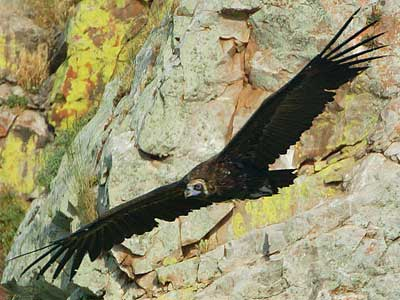
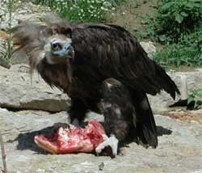

AVVOLTOIO MONACO (VULTURE)

| Climate/Terrain | Colline, montagne e pianure non artiche |
| Frequency | Rare |
| Organization | Solitary |
| Activity Cycle | Day |
| Diet | Carnivore |
| Intelligence | Animal (1) |
| Treasure | Nessuno |
| Alignment | Neutral |
| No. Appearing | 1d3 |
| Armor Class | 7 |
| Movement | 6, Fl. 18 |
| Hit Dice | 2 + 2 |
| Thac0 | 18 |
| No. of Attacks | 2 Artigli + 1 Becco |
| Damage / Attacks | 1d3/1d3/1d6 |
| Special Attacks | Nessuna |
| Special Defenses | Nessuna |
| Magic Resistance | Nessuna |
| Size | Medium |
| Morale | Steady (11) |
| XP value | 125 |
Descrizione
L’avvoltoio monaco è uno dei più grandi rapaci diurni esistenti. Il piumaggio è di un profondo bruno scuro, che da lontano appare quasi nero. Le sue ali sono grandi e lunghe così da favorire il volo planato o veleggiato. L’apertura alare può misurare fino a 2.5-2.9 m. La vista è eccezionale e la capacità di vedere piccoli oggetti, anche a distanze notevoli, è stata testata. Il suo becco è molto robusto ed uncinato. Il capo ed il collo sono nudi ed un collaretto di piume è posto alla base del collo. Il piumaggio è bruno lucente. Le zampe sono robuste con dita brevi.
Combat
L'avvoltoio attacca saltellando ad ali aperte i propri nemici e colpendoli con il forte becco e con gli artigli. Raramente attacca creature di taglia medium. Qualora si imbatta, però, in creature di taglia Small o Tiny, oppure in creature di taglia maggiore visibilmente ferite non esiterà ad attaccarle per mangiarle.
Habitat/Society
Vive in ambienti vari, talvolta anche fittamente alberati intervallati da spazi aperti. Solitamente conduce una vita solitaria, al massimo in coppia o pochi individui. La dieta è rappresentata principalmente da carcasse, incluse le parti dure, e, talvolta, anche da piccoli animali vivi o in difficoltà o, occasionalmente, da pesci e rettili.
Ecology
In alcune società sono cacciati per essere imbalsamati come trofei. Per questo motivo il corpo di un Avvoltoio Monaco può essere venduto per 2 o 3 monete d'oro.
